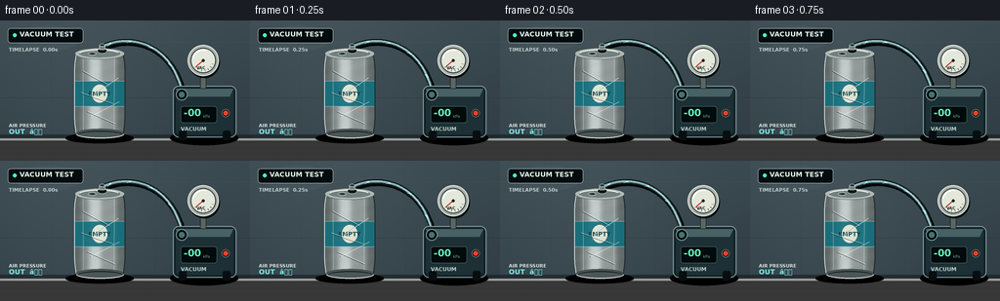
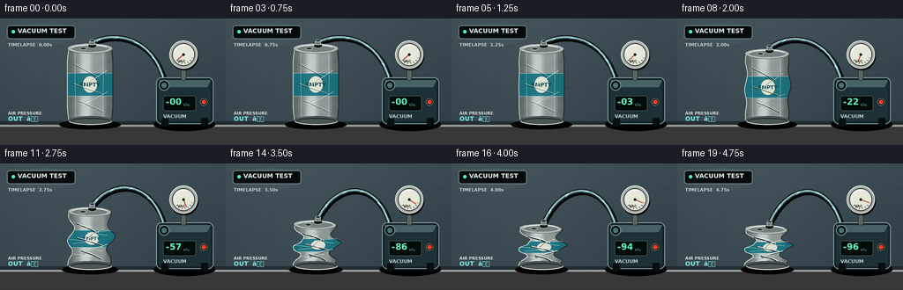

CODING AGENTS AS PIXEL WORLD MODELS
traex/GPT-5.6-Sol · phygen_019
点击播放 · 原生 RGB 像素
逐轮保存的候选
回放视频、检查图与代码变化。
每份候选均可单独播放。实际图片检查记录在下方工具轨迹中。
候选 01播放与检查图
点击播放 · 原生 RGB 像素


展开代码变化
--- 上一保存版本
+++ 本次保存版本
@@ -0,0 +1,311 @@
+from pathlib import Path
+import math
+import numpy as np
+from PIL import Image, ImageDraw, ImageFont, ImageFilter
+import artifact_io
+
+# Procedural, deterministic rendering of a laboratory vacuum-implosion timelapse.
+W, H, N = 256, 144, 20
+S = 4
+WW, HH = W*S, H*S
+ROOT = Path(__file__).resolve().parent
+
+try:
+ FONT = "/usr/share/fonts/truetype/dejavu/DejaVuSans.ttf"
+ FONT_B = "/usr/share/fonts/truetype/dejavu/DejaVuSans-Bold.ttf"
+except Exception:
+ FONT = FONT_B = None
+
+def font(px, bold=False):
+ return ImageFont.truetype(FONT_B if bold else FONT, max(1, int(px*S)))
+
+def P(points):
+ return [(int(round(x*S)), int(round(y*S))) for x,y in points]
+
+def box(x0,y0,x1,y1):
+ return tuple(int(round(v*S)) for v in (x0,y0,x1,y1))
+
+def smoothstep(x):
+ x=max(0.0,min(1.0,x)); return x*x*(3-2*x)
+
+def gauss(u,c,w): return math.exp(-((u-c)/w)**2)
+
+def bezier(a,b,c,d,t):
+ q=1-t
+ return (q**3*a[0]+3*q*q*t*b[0]+3*q*t*t*c[0]+t**3*d[0],
+ q**3*a[1]+3*q*q*t*b[1]+3*q*t*t*c[1]+t**3*d[1])
+
+def ellipse_poly(cx,cy,rx,ry, tilt=0.0, n=64, wobble=0.0):
+ pts=[]
+ for i in range(n):
+ a=2*math.pi*i/n
+ x=rx*math.cos(a); y=ry*math.sin(a)
+ y += tilt*x
+ x += wobble*math.sin(3*a)
+ pts.append((cx+x,cy+y))
+ return pts
+
+def rounded(draw, xy, r, fill, outline=None, width=1):
+ draw.rounded_rectangle(box(*xy), radius=int(r*S), fill=fill, outline=outline, width=max(1,int(width*S)))
+
+def line(draw, pts, fill, width=1, joint='curve'):
+ draw.line(P(pts), fill=fill, width=max(1,int(width*S)), joint=joint)
+
+# fixed softly textured lab background, built per frame to retain a slight timelapse feel
+def background(frame):
+ yy=np.arange(HH)[:,None]
+ xx=np.arange(WW)[None,:]
+ wall=np.zeros((HH,WW,3),dtype=np.float32)
+ base=np.array([48,61,68],dtype=np.float32)
+ light=(1-yy/(HH*1.1))*13 + 10*np.exp(-((xx-WW*.32)/(WW*.46))**2)
+ wall[:]=base
+ wall += light[:,:,None]
+ # fixed fine photographic grain
+ rng=np.random.default_rng(819+frame)
+ grain=rng.normal(0,0.75,(HH,WW,1))
+ wall += grain
+ wall=np.clip(wall,0,255).astype(np.uint8)
+ im=Image.fromarray(wall,'RGB')
+ d=ImageDraw.Draw(im,'RGBA')
+ # tiled/seamed laboratory wall
+ line(d,[(0,22),(256,22)],(170,188,191,20),.45)
+ line(d,[(0,79),(256,79)],(17,26,30,42),.55)
+ line(d,[(52,0),(52,121)],(21,31,35,32),.45)
+ line(d,[(159,0),(159,121)],(21,31,35,28),.45)
+ # soft practical light reflection at upper left
+ d.ellipse(box(15,5,83,31),fill=(180,215,218,10))
+ # rear wall / bench seam
+ d.rectangle(box(0,117,256,122),fill=(20,26,29,135))
+ d.rectangle(box(0,121,256,144),fill=(57,58,57,255))
+ d.rectangle(box(0,121,256,123),fill=(154,159,155,255))
+ # brushed worktop
+ for y in (128,134,140):
+ line(d,[(0,y),(256,y)],(225,229,222,14),.45)
+ for x in (12,39,71,143,246):
+ line(d,[(x,123),(x+16,144)],(5,10,11,15),.45)
+ return im
+
+def collapse_state(fi):
+ # The first half-second establishes the intact sealed can, then pressure difference builds.
+ raw=(fi/19.0-0.08)/0.92
+ p=smoothstep(raw)
+ # buckling accelerates dramatically after initial denting
+ p=smoothstep(p)
+ top_y=34 + 41*(p**1.30)
+ return p,top_y
+
+def sides(u,p):
+ """Asymmetric thin-wall buckling silhouette at normalized current can height."""
+ cx=102 + p*(1.6*math.sin(math.pi*u)-2.2*math.sin(2.5*math.pi*u))
+ base=25.7 - 1.5*gauss(u,0,.10) - 1.4*gauss(u,1,.10)
+ # Alternating local inward folds and small outward knuckles.
+ left=cx-base + p*(14.0*gauss(u,.29,.145)+7.8*gauss(u,.76,.13)-4.6*gauss(u,.54,.095))
+ right=cx+base - p*(8.8*gauss(u,.24,.13)+15.0*gauss(u,.69,.145)-3.8*gauss(u,.47,.09))
+ # late sharp pinches convey implosion rather than a soft squeeze
+ late=max(0,(p-.55)/.45)
+ left += late*(3.5*gauss(u,.44,.055)-3.0*gauss(u,.63,.05))
+ right -= late*(4.3*gauss(u,.52,.06)-2.2*gauss(u,.84,.05))
+ return left,right,cx
+
+def draw_hose(im, fi, p, top_y):
+ d=ImageDraw.Draw(im,'RGBA')
+ a=(104.5,top_y-7.0); b=(126,12+top_y*.09); c=(174,17); end=(187,75)
+ pts=[bezier(a,b,c,end,k/80) for k in range(81)]
+ # cast shadow and translucent reinforced tube
+ line(d,[(x+1.2,y+1.7) for x,y in pts],(5,9,10,120),6.2)
+ line(d,pts,(24,34,37,255),5.2)
+ line(d,pts,(123,166,168,150),2.35)
+ line(d,[(x-.5,y-.7) for x,y in pts],(218,243,239,108),.72)
+ # Flow markers travel from can to pump, a strong visual cue that air is pulled out.
+ for j in range(4):
+ z=(0.10 + (fi*.095+j*.225))%0.88
+ q=bezier(a,b,c,end,z)
+ q2=bezier(a,b,c,end,min(.99,z+.026))
+ line(d,[q,q2],(161,239,244,220),1.55)
+ # tiny forward chevron
+ ang=math.atan2(q2[1]-q[1],q2[0]-q[0])
+ hx=q2[0]-3.0*math.cos(ang); hy=q2[1]-3.0*math.sin(ang)
+ left=(hx+2*math.cos(ang+2.35),hy+2*math.sin(ang+2.35))
+ line(d,[left,q2],(195,250,250,190),.7)
+
+def draw_machine(im, fi, p):
+ d=ImageDraw.Draw(im,'RGBA')
+ # pump shadow
+ d.ellipse(box(174,113,244,128),fill=(0,0,0,95))
+ # body, bevel and feet
+ rounded(d,(177,67,242,120),6,(23,37,42,255),(128,157,156,130),1)
+ rounded(d,(180,70,239,117),4,(32,51,56,255))
+ d.polygon(P([(180,70),(239,70),(235,78),(183,78)]),fill=(73,99,101,125))
+ rounded(d,(183,113,191,123),2,(13,18,20,255))
+ rounded(d,(228,113,236,123),2,(13,18,20,255))
+ # hose inlet
+ d.ellipse(box(180,70,192,82),fill=(6,14,16,255),outline=(124,148,146,220),width=S)
+ d.ellipse(box(183,73,189,79),fill=(69,116,118,255))
+ # digital vacuum display
+ rounded(d,(185,88,222,105),2.5,(6,15,16,255),(80,110,108,255),.7)
+ val=int(round(96*p))
+ txt=f"-{val:02d}"
+ d.text((188*S,88.7*S),txt,font=font(10,bold=True),fill=(100,241,186,255))
+ d.text((208*S,96*S),"kPa",font=font(4.2),fill=(117,177,160,230))
+ # controls and label
+ d.ellipse(box(227,91,235,99),fill=(15,18,18,255),outline=(154,166,159,200),width=max(1,S//2))
+ d.ellipse(box(228.5,92.5,233.5,97.5),fill=(234,67,44,255))
+ d.text((185*S,108*S),"VACUUM",font=font(5.7,bold=True),fill=(185,205,201,230))
+ # gauge stem
+ rounded(d,(205,57,211,70),1.5,(93,103,100,255),(19,24,24,255),.7)
+ # analog gauge body and face
+ d.ellipse(box(193,27,225,59),fill=(9,15,17,150))
+ d.ellipse(box(192,25,224,57),fill=(167,175,169,255),outline=(222,227,218,255),width=S)
+ d.ellipse(box(195,28,221,54),fill=(225,229,216,255),outline=(53,62,61,255),width=S)
+ cx,cy=208,41
+ for k in range(7):
+ ang=math.radians(140-k*20)
+ r0=9.2; r1=11.1
+ line(d,[(cx+math.cos(ang)*r0,cy+math.sin(ang)*r0),(cx+math.cos(ang)*r1,cy+math.sin(ang)*r1)],(32,38,38,255),.7)
+ d.text((201.2*S,46.2*S),"VAC",font=font(4.2,bold=True),fill=(42,48,46,255))
+ # needle sweeps from atmospheric to deep vacuum
+ ang=math.radians(140-120*p)
+ line(d,[(cx,cy),(cx+math.cos(ang)*9.2,cy+math.sin(ang)*9.2)],(205,43,33,255),1.15)
+ d.ellipse(box(cx-1.6,cy-1.6,cx+1.6,cy+1.6),fill=(38,42,40,255))
+ # glass shine
+ d.arc(box(197,30,219,52),190,285,fill=(255,255,255,120),width=S)
+
+def can_polygon(p,top_y):
+ ys=np.linspace(top_y,116,120)
+ left=[]; right=[]
+ for y in ys:
+ u=(y-top_y)/max(1,116-top_y)
+ l,r,_=sides(u,p); left.append((l,y)); right.append((r,y))
+ return left+right[::-1], left, right
+
+def at_u(u,p,top_y):
+ y=top_y+u*(116-top_y)
+ l,r,c=sides(u,p)
+ return y,l,r,c
+
+def draw_can(im, fi, p, top_y):
+ # floor shadow changes as the body compacts
+ d=ImageDraw.Draw(im,'RGBA')
+ shadow_w=35-5*p
+ d.ellipse(box(102-shadow_w,115.5,102+shadow_w,126),fill=(0,0,0,95))
+ poly,left,right=can_polygon(p,top_y)
+ mask=Image.new('L',(WW,HH),0); md=ImageDraw.Draw(mask)
+ md.polygon(P(poly),fill=255)
+ # horizontal cylindrical metallic shading + vertically brushed texture
+ yy,xx=np.mgrid[0:HH,0:WW]
+ xn=xx/S
+ center=102.0
+ rel=(xn-center)/27.0
+ cyl=np.clip(1-rel*rel,0,1)
+ highlight=58*np.exp(-((rel+0.20)/.28)**2) + 22*np.exp(-((rel-.48)/.16)**2)
+ edge=-56*np.abs(rel)**1.55
+ rng=np.random.default_rng(3100+fi)
+ noise=rng.normal(0,2.2,(HH,WW))
+ brushed=3.2*np.sin(xx*.19)+1.7*np.sin(xx*.043+yy*.11)
+ base=np.stack([np.full_like(cyl,142),np.full_like(cyl,151),np.full_like(cyl,150)],2)
+ val=highlight+edge+brushed+noise
+ metal=np.clip(base+val[:,:,None],0,255).astype(np.uint8)
+ metal_im=Image.fromarray(metal,'RGB')
+ im.paste(metal_im,(0,0),mask)
+ # body decorations clipped to warped silhouette
+ deco=Image.new('RGBA',(WW,HH),(0,0,0,0)); dd=ImageDraw.Draw(deco,'RGBA')
+ # turquoise band follows the current body and visibly buckles
+ u0,u1=.34,.66
+ samples=np.linspace(u0,u1,40)
+ lp=[]; rp=[]
+ for u in samples:
+ y,l,r,c=at_u(float(u),p,top_y); lp.append((l,y)); rp.append((r,y))
+ dd.polygon(P(lp+rp[::-1]),fill=(20,111,125,225))
+ # band edge highlights
+ for u in (u0,u1):
+ y,l,r,c=at_u(u,p,top_y); line(dd,[(l,y),(r,y)],(164,224,220,150),.65)
+ # circular simple logo, compressed with can
+ ym,lm,rm,cm=at_u(.50,p,top_y)
+ logo_h=max(4,(116-top_y)*.12)
+ dd.ellipse(box(cm-8.5,ym-logo_h,cm+8.5,ym+logo_h),fill=(224,230,214,225),outline=(10,72,81,180),width=max(1,S//2))
+ # lettering remains legible early, becomes squeezed/occluded naturally late
+ if p<.83:
+ fs=max(3.6,6.2*(1-.30*p))
+ text="EMPTY"
+ fb=font(fs,bold=True)
+ bb=dd.textbbox((0,0),text,font=fb)
+ dd.text(((cm*S-(bb[2]-bb[0])/2), (ym*S-(bb[3]-bb[1])/2-1*S)),text,font=fb,fill=(14,65,72,245))
+ # Clip decorations to the actual metal wall
+ clipped=Image.new('RGBA',(WW,HH),(0,0,0,0)); clipped.paste(deco,(0,0),mask)
+ im.alpha_composite(clipped) if im.mode=='RGBA' else im.paste(Image.alpha_composite(im.convert('RGBA'),clipped).convert('RGB'))
+ # Reacquire compositing-safe canvas and detail draw
+ d=ImageDraw.Draw(im,'RGBA')
+ # side rims and edge shadows
+ line(d,left,(229,237,230,190),.8)
+ line(d,right,(36,45,47,210),1.05)
+ # stamped vertical seams in the intact can
+ if p<.5:
+ for dx,alpha in [(-17,75),(15,50)]:
+ line(d,[(102+dx,top_y+5),(102+dx*.98,114)],(236,245,239,alpha),.45)
+ # Buckling creases strengthen as pressure increases
+ strength=int(35+190*p)
+ crease_specs=[(.22,-18,.40,9),(.31,18,.52,-7),(.49,-20,.63,13),(.61,19,.79,-10),(.73,-13,.88,15)]
+ for u1,x1,u2,x2 in crease_specs:
+ y1,l1,r1,c1=at_u(u1,p,top_y); y2,l2,r2,c2=at_u(u2,p,top_y)
+ x1c=max(l1+1,min(r1-1,c1+x1*(1-.25*p)))
+ x2c=max(l2+1,min(r2-1,c2+x2*(1-.25*p)))
+ mid=((x1c+x2c)/2 + (3 if x1<0 else -3)*p,(y1+y2)/2)
+ line(d,[(x1c,y1),mid,(x2c,y2)],(29,39,41,strength),.55+1.0*p)
+ line(d,[(x1c+.9,y1-.5),(mid[0]+.9,mid[1]-.5),(x2c+.9,y2-.5)],(245,250,238,int(strength*.58)),.5+.55*p)
+ # Extra short sharp wrinkles after buckling threshold
+ if p>.35:
+ for k,u in enumerate((.28,.39,.55,.68,.82)):
+ y,l,r,c=at_u(u,p,top_y)
+ side = l+2 if k%2==0 else r-2
+ dest=c+((-1)**k)*3
+ line(d,[(side,y-2.2),(dest,y),(side+((-1)**k)*4,y+2.8)],(245,248,236,int(130*p)),.7)
+ # bottom rolled rim (stays relatively rigid)
+ d.polygon(P(ellipse_poly(102,116,24.5,4.9,tilt=-.005,wobble=.5*p)),fill=(77,88,88,255),outline=(28,36,37,255))
+ d.arc(box(78,112,127,121),2,178,fill=(228,236,228,220),width=S)
+ d.arc(box(80,113.2,125,120.6),182,356,fill=(25,33,35,220),width=S)
+ # Top lid remains stiff but tilts slightly as sidewalls implode.
+ tilt=.022*p
+ top_pts=ellipse_poly(102-1.2*p,top_y,25.3-1.5*p,5.8-0.6*p,tilt=tilt,wobble=.55*p)
+ d.polygon(P(top_pts),fill=(174,183,179,255),outline=(42,51,52,255))
+ inner=ellipse_poly(102-1.2*p,top_y,21.6-1.3*p,4.15-0.4*p,tilt=tilt)
+ d.polygon(P(inner),fill=(115,128,127,255),outline=(224,232,224,180))
+ d.arc(box(81,top_y-4.2,122,top_y+4),190,342,fill=(241,246,236,180),width=S)
+ # Pull tab and airtight brass/black vacuum fitting.
+ tabcx=94-1.0*p
+ d.ellipse(box(tabcx-4,top_y-1.8,tabcx+4.5,top_y+1.7),fill=(77,89,89,255),outline=(216,223,216,180),width=max(1,S//2))
+ d.ellipse(box(tabcx-1.3,top_y-.75,tabcx+2.5,top_y+.65),fill=(42,52,52,255))
+ fx=104.5
+ d.ellipse(box(fx-5,top_y-5.4,fx+5,top_y-.3),fill=(20,27,27,255),outline=(194,203,194,180),width=max(1,S//2))
+ rounded(d,(fx-3.1,top_y-9,fx+3.1,top_y-4),1.4,(115,130,126,255),(220,229,217,210),.65)
+ d.ellipse(box(fx-2.8,top_y-10.2,fx+2.8,top_y-7.4),fill=(36,48,49,255),outline=(180,205,201,255),width=max(1,S//2))
+
+def add_overlay(im, fi, p):
+ d=ImageDraw.Draw(im,'RGBA')
+ # restrained technical time-lapse overlay
+ rounded(d,(8,8,85,23),3,(7,15,18,150),(172,202,199,55),.55)
+ d.ellipse(box(13,13,17,17),fill=(78,234,188,255))
+ d.text((20*S,10.1*S),"VACUUM TEST",font=font(7,bold=True),fill=(225,239,235,235))
+ d.text((9*S,27*S),f"TIMELAPSE {fi/4:04.2f}s",font=font(5.2,bold=True),fill=(188,208,207,180))
+ # pressure direction symbol at lower left, not an explanatory title card
+ d.text((9*S,105*S),"AIR PRESSURE",font=font(4.8,bold=True),fill=(213,225,220,155))
+ d.text((9*S,110*S),"OUT â",font=font(7.2,bold=True),fill=(129,232,230,210))
+
+def render(fi):
+ p,top_y=collapse_state(fi)
+ im=background(fi).convert('RGBA')
+ draw_hose(im,fi,p,top_y)
+ draw_machine(im,fi,p)
+ draw_can(im,fi,p,top_y)
+ add_overlay(im,fi,p)
+ im=im.convert('RGB').resize((W,H),Image.Resampling.LANCZOS)
+ # mild final contrast for small-frame clarity
+ arr=np.asarray(im).astype(np.float32)
+ arr=(arr-128)*1.035+128
+ return np.clip(arr,0,255).astype(np.uint8)
+
+def main():
+ frames=np.stack([render(i) for i in range(N)],axis=0)
+ artifact_io.save(frames,ROOT)
+
+if __name__=='__main__':
+ main()
可观测工具轨迹
实际执行的命令与返回图片。
命令 1exit 0
/bin/bash -lc "ls -la && printf '\\n--- prompt.txt ---\\n' && cat prompt.txt && printf '\\n--- GENERATION_RULES.md ---\\n' && cat GENERATION_RULES.md && printf '\\n--- task_spec.json ---\\n' && cat task_spec.json"
命令 2exit 0
/bin/bash -lc "sed -n '1,240p' artifact_io.py && printf '\\n--- player ---\\n' && sed -n '1,220p' player_template.html"
命令 3exit 0
/bin/bash -lc "cat > generate.py <<'PY'
from pathlib import Path
import math
import numpy as np
from PIL import Image, ImageDraw, ImageFont, ImageFilter
import artifact_io
# Procedural, deterministic rendering of a laboratory vacuum-implosion timelapse.
W, H, N = 256, 144, 20
S = 4
WW, HH = W*S, H*S
ROOT = Path(__file__).resolve().parent
try:
FONT = \"/usr/share/fonts/truetype/dejavu/DejaVuSans.ttf\"
FONT_B = \"/usr/share/fonts/truetype/dejavu/DejaVuSans-Bold.ttf\"
except Exception:
FONT = FONT_B = None
def font(px, bold=False):
return ImageFont.truetype(FONT_B if bold else FONT, max(1, int(px*S)))
def P(points):
return [(int(round(x*S)), int(round(y*S))) for x,y in points]
def box(x0,y0,x1,y1):
return tuple(int(round(v*S)) for v in (x0,y0,x1,y1))
def smoothstep(x):
x=max(0.0,min(1.0,x)); return x*x*(3-2*x)
def gauss(u,c,w): return math.exp(-((u-c)/w)**2)
def bezier(a,b,c,d,t):
q=1-t
return (q**3*a[0]+3*q*q*t*b[0]+3*q*t*t*c[0]+t**3*d[0],
q**3*a[1]+3*q*q*t*b[1]+3*q*t*t*c[1]+t**3*d[1])
def ellipse_poly(cx,cy,rx,ry, tilt=0.0, n=64, wobble=0.0):
pts=[]
for i in range(n):
a=2*math.pi*i/n
x=rx*math.cos(a); y=ry*math.sin(a)
y += tilt*x
x += wobble*math.sin(3*a)
pts.append((cx+x,cy+y))
return pts
def rounded(draw, xy, r, fill, outline=None, width=1):
draw.rounded_rectangle(box(*xy), radius=int(r*S), fill=fill, outline=outline, width=max(1,int(width*S)))
def line(draw, pts, fill, width=1, joint='curve'):
draw.line(P(pts), fill=fill, width=max(1,int(width*S)), joint=joint)
# fixed softly textured lab background, built per frame to retain a slight timelapse feel
def background(frame):
yy=np.arange(HH)[:,None]
xx=np.arange(WW)[None,:]
wall=np.zeros((HH,WW,3),dtype=np.float32)
base=np.array([48,61,68],dtype=np.float32)
light=(1-yy/(HH*1.1))*13 + 10*np.exp(-((xx-WW*.32)/(WW*.46))**2)
wall[:]=base
wall += light[:,:,None]
# fixed fine photographic grain
rng=np.random.default_rng(819+frame)
grain=rng.normal(0,0.75,(HH,WW,1))
wall += grain
wall=np.clip(wall,0,255).astype(np.uint8)
im=Image.fromarray(wall,'RGB')
d=ImageDraw.Draw(im,'RGBA')
# tiled/seamed laboratory wall
line(d,[(0,22),(256,22)],(170,188,191,20),.45)
line(d,[(0,79),(256,79)],(17,26,30,42),.55)
line(d,[(52,0),(52,121)],(21,31,35,32),.45)
line(d,[(159,0),(159,121)],(21,31,35,28),.45)
# soft practical light reflection at upper left
d.ellipse(box(15,5,83,31),fill=(180,215,218,10))
# rear wall / bench seam
d.rectangle(box(0,117,256,122),fill=(20,26,29,135))
d.rectangle(box(0,121,256,144),fill=(57,58,57,255))
d.rectangle(box(0,121,256,123),fill=(154,159,155,255))
# brushed worktop
for y in (128,134,140):
line(d,[(0,y),(256,y)],(225,229,222,14),.45)
for x in (12,39,71,143,246):
line(d,[(x,123),(x+16,144)],(5,10,11,15),.45)
return im
def collapse_state(fi):
# The first half-second establishes the intact sealed can, then pressure difference builds.
raw=(fi/19.0-0.08)/0.92
p=smoothstep(raw)
# buckling accelerates dramatically after initial denting
p=smoothstep(p)
top_y=34 + 41*(p**1.30)
return p,top_y
def sides(u,p):
\"\"\"Asymmetric thin-wall buckling silhouette at normalized current can height.\"\"\"
cx=102 + p*(1.6*math.sin(math.pi*u)-2.2*math.sin(2.5*math.pi*u))
base=25.7 - 1.5*gauss(u,0,.10) - 1.4*gauss(u,1,.10)
# Alternating local inward folds and small outward knuckles.
left=cx-base + p*(14.0*gauss(u,.29,.145)+7.8*gauss(u,.76,.13)-4.6*gauss(u,.54,.095))
right=cx+base - p*(8.8*gauss(u,.24,.13)+15.0*gauss(u,.69,.145)-3.8*gauss(u,.47,.09))
# late sharp pinches convey implosion rather than a soft squeeze
late=max(0,(p-.55)/.45)
left += late*(3.5*gauss(u,.44,.055)-3.0*gauss(u,.63,.05))
right -= late*(4.3*gauss(u,.52,.06)-2.2*gauss(u,.84,.05))
return left,right,cx
def draw_hose(im, fi, p, top_y):
d=ImageDraw.Draw(im,'RGBA')
a=(104.5,top_y-7.0); b=(126,12+top_y*.09); c=(174,17); end=(187,75)
pts=[bezier(a,b,c,end,k/80) for k in range(81)]
# cast shadow and translucent reinforced tube
line(d,[(x+1.2,y+1.7) for x,y in pts],(5,9,10,120),6.2)
line(d,pts,(24,34,37,255),5.2)
line(d,pts,(123,166,168,150),2.35)
line(d,[(x-.5,y-.7) for x,y in pts],(218,243,239,108),.72)
# Flow markers travel from can to pump, a strong visual cue that air is pulled out.
for j in range(4):
z=(0.10 + (fi*.095+j*.225))%0.88
q=bezier(a,b,c,end,z)
q2=bezier(a,b,c,end,min(.99,z+.026))
line(d,[q,q2],(161,239,244,220),1.55)
# tiny forward chevron
ang=math.atan2(q2[1]-q[1],q2[0]-q[0])
hx=q2[0]-3.0*math.cos(ang); hy=q2[1]-3.0*math.sin(ang)
left=(hx+2*math.cos(ang+2.35),hy+2*math.sin(ang+2.35))
line(d,[left,q2],(195,250,250,190),.7)
def draw_machine(im, fi, p):
d=ImageDraw.Draw(im,'RGBA')
# pump shadow
d.ellipse(box(174,113,244,128),fill=(0,0,0,95))
# body, bevel and feet
rounded(d,(177,67,242,120),6,(23,37,42,255),(128,157,156,130),1)
rounded(d,(180,70,239,117),4,(32,51,56,255))
d.polygon(P([(180,70),(239,70),(235,78),(183,78)]),fill=(73,99,101,125))
rounded(d,(183,113,191,123),2,(13,18,20,255))
rounded(d,(228,113,236,123),2,(13,18,20,255))
# hose inlet
d.ellipse(box(180,70,192,82),fill=(6,14,16,255),outline=(124,148,146,220),width=S)
d.ellipse(box(183,73,189,79),fill=(69,116,118,255))
# digital vacuum display
rounded(d,(185,88,222,105),2.5,(6,15,16,255),(80,110,108,255),.7)
val=int(round(96*p))
txt=f\"-{val:02d}\"
d.text((188*S,88.7*S),txt,font=font(10,bold=True),fill=(100,241,186,255))
d.text((208*S,96*S),\"kPa\",font=font(4.2),fill=(117,177,160,230))
# controls and label
d.ellipse(box(227,91,235,99),fill=(15,18,18,255),outline=(154,166,159,200),width=max(1,S//2))
d.ellipse(box(228.5,92.5,233.5,97.5),fill=(234,67,44,255))
d.text((185*S,108*S),\"VACUUM\",font=font(5.7,bold=True),fill=(185,205,201,230))
# gauge stem
rounded(d,(205,57,211,70),1.5,(93,103,100,255),(19,24,24,255),.7)
# analog gauge body and face
d.ellipse(box(193,27,225,59),fill=(9,15,17,150))
d.ellipse(box(192,25,224,57),fill=(167,175,169,255),outline=(222,227,218,255),width=S)
d.ellipse(box(195,28,221,54),fill=(225,229,216,255),outline=(53,62,61,255),width=S)
cx,cy=208,41
for k in range(7):
ang=math.radians(140-k*20)
r0=9.2; r1=11.1
line(d,[(cx+math.cos(ang)*r0,cy+math.sin(ang)*r0),(cx+math.cos(ang)*r1,cy+math.sin(ang)*r1)],(32,38,38,255),.7)
d.text((201.2*S,46.2*S),\"VAC\",font=font(4.2,bold=True),fill=(42,48,46,255))
# needle sweeps from atmospheric to deep vacuum
ang=math.radians(140-120*p)
line(d,[(cx,cy),(cx+math.cos(ang)*9.2,cy+math.sin(ang)*9.2)],(205,43,33,255),1.15)
d.ellipse(box(cx-1.6,cy-1.6,cx+1.6,cy+1.6),fill=(38,42,40,255))
# glass shine
d.arc(box(197,30,219,52),190,285,fill=(255,255,255,120),width=S)
def can_polygon(p,top_y):
ys=np.linspace(top_y,116,120)
left=[]; right=[]
for y in ys:
u=(y-top_y)/max(1,116-top_y)
l,r,_=sides(u,p); left.append((l,y)); right.append((r,y))
return left+right[::-1], left, right
def at_u(u,p,top_y):
y=top_y+u*(116-top_y)
l,r,c=sides(u,p)
return y,l,r,c
def draw_can(im, fi, p, top_y):
# floor shadow changes as the body compacts
d=ImageDraw.Draw(im,'RGBA')
shadow_w=35-5*p
d.ellipse(box(102-shadow_w,115.5,102+shadow_w,126),fill=(0,0,0,95))
poly,left,right=can_polygon(p,top_y)
mask=Image.new('L',(WW,HH),0); md=ImageDraw.Draw(mask)
md.polygon(P(poly),fill=255)
# horizontal cylindrical metallic shading + vertically brushed texture
yy,xx=np.mgrid[0:HH,0:WW]
xn=xx/S
center=102.0
rel=(xn-center)/27.0
cyl=np.clip(1-rel*rel,0,1)
highlight=58*np.exp(-((rel+0.20)/.28)**2) + 22*np.exp(-((rel-.48)/.16)**2)
edge=-56*np.abs(rel)**1.55
rng=np.random.default_rng(3100+fi)
noise=rng.normal(0,2.2,(HH,WW))
brushed=3.2*np.sin(xx*.19)+1.7*np.sin(xx*.043+yy*.11)
base=np.stack([np.full_like(cyl,142),np.full_like(cyl,151),np.full_like(cyl,150)],2)
val=highlight+edge+brushed+noise
metal=np.clip(base+val[:,:,None],0,255).astype(np.uint8)
metal_im=Image.fromarray(metal,'RGB')
im.paste(metal_im,(0,0),mask)
# body decorations clipped to warped silhouette
deco=Image.new('RGBA',(WW,HH),(0,0,0,0)); dd=ImageDraw.Draw(deco,'RGBA')
# turquoise band follows the current body and visibly buckles
u0,u1=.34,.66
samples=np.linspace(u0,u1,40)
lp=[]; rp=[]
for u in samples:
y,l,r,c=at_u(float(u),p,top_y); lp.append((l,y)); rp.append((r,y))
dd.polygon(P(lp+rp[::-1]),fill=(20,111,125,225))
# band edge highlights
for u in (u0,u1):
y,l,r,c=at_u(u,p,top_y); line(dd,[(l,y),(r,y)],(164,224,220,150),.65)
# circular simple logo, compressed with can
ym,lm,rm,cm=at_u(.50,p,top_y)
logo_h=max(4,(116-top_y)*.12)
dd.ellipse(box(cm-8.5,ym-logo_h,cm+8.5,ym+logo_h),fill=(224,230,214,225),outline=(10,72,81,180),width=max(1,S//2))
# lettering remains legible early, becomes squeezed/occluded naturally late
if p<.83:
fs=max(3.6,6.2*(1-.30*p))
text=\"EMPTY\"
fb=font(fs,bold=True)
bb=dd.textbbox((0,0),text,font=fb)
dd.text(((cm*S-(bb[2]-bb[0])/2), (ym*S-(bb[3]-bb[1])/2-1*S)),text,font=fb,fill=(14,65,72,245))
# Clip decorations to the actual metal wall
clipped=Image.new('RGBA',(WW,HH),(0,0,0,0)); clipped.paste(deco,(0,0),mask)
im.alpha_composite(clipped) if im.mode=='RGBA' else im.paste(Image.alpha_composite(im.convert('RGBA'),clipped).convert('RGB'))
# Reacquire compositing-safe canvas and detail draw
d=ImageDraw.Draw(im,'RGBA')
# side rims and edge shadows
line(d,left,(229,237,230,190),.8)
line(d,right,(36,45,47,210),1.05)
# stamped vertical seams in the intact can
if p<.5:
for dx,alpha in [(-17,75),(15,50)]:
line(d,[(102+dx,top_y+5),(102+dx*.98,114)],(236,245,239,alpha),.45)
# Buckling creases strengthen as pressure increases
strength=int(35+190*p)
crease_specs=[(.22,-18,.40,9),(.31,18,.52,-7),(.49,-20,.63,13),(.61,19,.79,-10),(.73,-13,.88,15)]
for u1,x1,u2,x2 in crease_specs:
y1,l1,r1,c1=at_u(u1,p,top_y); y2,l2,r2,c2=at_u(u2,p,top_y)
x1c=max(l1+1,min(r1-1,c1+x1*(1-.25*p)))
x2c=max(l2+1,min(r2-1,c2+x2*(1-.25*p)))
mid=((x1c+x2c)/2 + (3 if x1<0 else -3)*p,(y1+y2)/2)
line(d,[(x1c,y1),mid,(x2c,y2)],(29,39,41,strength),.55+1.0*p)
line(d,[(x1c+.9,y1-.5),(mid[0]+.9,mid[1]-.5),(x2c+.9,y2-.5)],(245,250,238,int(strength*.58)),.5+.55*p)
# Extra short sharp wrinkles after buckling threshold
if p>.35:
for k,u in enumerate((.28,.39,.55,.68,.82)):
y,l,r,c=at_u(u,p,top_y)
side = l+2 if k%2==0 else r-2
dest=c+((-1)**k)*3
line(d,[(side,y-2.2),(dest,y),(side+((-1)**k)*4,y+2.8)],(245,248,236,int(130*p)),.7)
# bottom rolled rim (stays relatively rigid)
d.polygon(P(ellipse_poly(102,116,24.5,4.9,tilt=-.005,wobble=.5*p)),fill=(77,88,88,255),outline=(28,36,37,255))
d.arc(box(78,112,127,121),2,178,fill=(228,236,228,220),width=S)
d.arc(box(80,113.2,125,120.6),182,356,fill=(25,33,35,220),width=S)
# Top lid remains stiff but tilts slightly as sidewalls implode.
tilt=.022*p
top_pts=ellipse_poly(102-1.2*p,top_y,25.3-1.5*p,5.8-0.6*p,tilt=tilt,wobble=.55*p)
d.polygon(P(top_pts),fill=(174,183,179,255),outline=(42,51,52,255))
inner=ellipse_poly(102-1.2*p,top_y,21.6-1.3*p,4.15-0.4*p,tilt=tilt)
d.polygon(P(inner),fill=(115,128,127,255),outline=(224,232,224,180))
d.arc(box(81,top_y-4.2,122,top_y+4),190,342,fill=(241,246,236,180),width=S)
# Pull tab and airtight brass/black vacuum fitting.
tabcx=94-1.0*p
d.ellipse(box(tabcx-4,top_y-1.8,tabcx+4.5,top_y+1.7),fill=(77,89,89,255),outline=(216,223,216,180),width=max(1,S//2))
d.ellipse(box(tabcx-1.3,top_y-.75,tabcx+2.5,top_y+.65),fill=(42,52,52,255))
fx=104.5
d.ellipse(box(fx-5,top_y-5.4,fx+5,top_y-.3),fill=(20,27,27,255),outline=(194,203,194,180),width=max(1,S//2))
rounded(d,(fx-3.1,top_y-9,fx+3.1,top_y-4),1.4,(115,130,126,255),(220,229,217,210),.65)
d.ellipse(box(fx-2.8,top_y-10.2,fx+2.8,top_y-7.4),fill=(36,48,49,255),outline=(180,205,201,255),width=max(1,S//2))
def add_overlay(im, fi, p):
d=ImageDraw.Draw(im,'RGBA')
# restrained technical time-lapse overlay
rounded(d,(8,8,85,23),3,(7,15,18,150),(172,202,199,55),.55)
d.ellipse(box(13,13,17,17),fill=(78,234,188,255))
d.text((20*S,10.1*S),\"VACUUM TEST\",font=font(7,bold=True),fill=(225,239,235,235))
d.text((9*S,27*S),f\"TIMELAPSE {fi/4:04.2f}s\",font=font(5.2,bold=True),fill=(188,208,207,180))
# pressure direction symbol at lower left, not an explanatory title card
d.text((9*S,105*S),\"AIR PRESSURE\",font=font(4.8,bold=True),fill=(213,225,220,155))
d.text((9*S,110*S),\"OUT â\",font=font(7.2,bold=True),fill=(129,232,230,210))
def render(fi):
p,top_y=collapse_state(fi)
im=background(fi).convert('RGBA')
draw_hose(im,fi,p,top_y)
draw_machine(im,fi,p)
draw_can(im,fi,p,top_y)
add_overlay(im,fi,p)
im=im.convert('RGB').resize((W,H),Image.Resampling.LANCZOS)
# mild final contrast for small-frame clarity
arr=np.asarray(im).astype(np.float32)
arr=(arr-128)*1.035+128
return np.clip(arr,0,255).astype(np.uint8)
def main():
frames=np.stack([render(i) for i in range(N)],axis=0)
artifact_io.save(frames,ROOT)
if __name__=='__main__':
main()
PY
python generate.py
ls -lh pixels.npz inspection.png transition_check.png frames/00.png frames/19.png"命令 4exit 0
/bin/bash -lc "python - <<'PY'
from pathlib import Path
p=Path('generate.py')
s=p.read_text()
s=s.replace('\"OUT âÂÂ\"','\"OUT >>>\"')
p.write_text(s)
PY
python generate.py
python - <<'PY'
import numpy as np
z=np.load('pixels.npz')['pixels']
print('packed tensor:',z.shape,z.dtype)
# recover frames and report temporal change, confirming true per-frame animation
p=z.transpose(2,0,1)
print('changed pixels/frame:',[int(np.count_nonzero(p[i]"'!=p[i-1])) for i in range(1,20)])
PY'视觉工具实际返回图片 1

保存候选 1 份；完成命令 4 次；可验证图片返回 1 张。原始 API 响应与完整日志保留在本地。